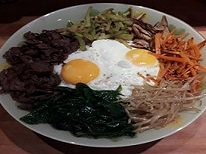
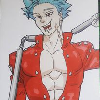
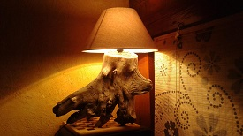
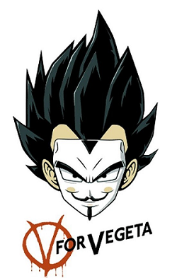

Présentation
Bonjours
Alors je me présente, je suis yannick,je suis né aux Goudes en 1981 et je vais vous présenter les divers
hobbys qui rythment ma vie.
Vous allez découvrir au fur et à mesure de votre lecture et des divers liens de cette page, les diverses
passions et créations que j'ai réalisées. J'aime la cuisine et un peu la patisserie, le dessin, le
bricolage. Sur le plan professionnel je suis aussi versatile. En effet je suis passsé par la sécurité,
l'armée, la pénitentiaire mais aussi j'ai été technicien en froid et climatisation aussi bien domestique
que pour les véhicules et plus récement je fais dans la conduite de train TER. Et maintenant j'essaye de
me former au dévelopement web (HTML, Css et Javascript pour le moment) car cela m'a toujours plu mais
avait tendence à me faire peur, toute ces lignes de code qui ne veulent rien dire pour un non initié
comme moi , a de quoi être un peu effrayant.
Mes diverses passions
Cuisine/Pâtisserie
J'aime la cuisine et j'aime aussi manger, alors quoi de mieux que de prépârer ceux qui nous fais envie.
Le Dessin
Le dessin est pour moi un passe temps qui me permet justement de faire passer le temps trés vite sans même m'en appercevoir. Je ne suis pas le meilleur, ni le pire.
Le bricolage
Alors la on est plus sur une activité qui me prend de temps en temps. Un besoin ou une idée et c'est parti, lampe, mirroir, et autres objets peuvent voir le jour.
Ma petite collection DBZ
J'ai 40 ans et je fais donc parti de la génération Club Dorothé et bien sur comme beaucoup de personne de cette génération je vous une certaine passion pour les mangas et animés de l'époque. Surtout un certain Dragon Ball Z. Mais pas que bien sur. Donc je vais dans cette présentation vous dévoiler une partie de ma collection (voir toute ma collection si vous êtes sages) juste en dessous.
{kind=link}
{kind=link}
{kind=link}
{kind=link}
{kind=link}
Mes projets en dévelopement web
En premier lieu on trouve ce site sur lequel vous êtent actuellement et qui me sert de vitrine.
Ensuite vient mon CV que vous pouvez trouver ICI.